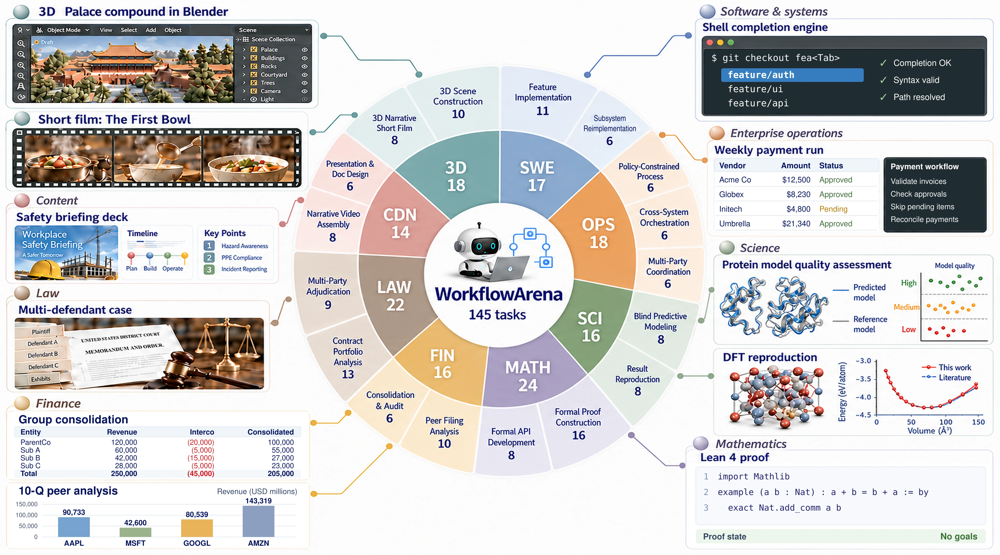

36.95%
Full delivery remains difficult
Opus with Claude Code at max effort achieves the highest Overall Resolved. Even the strongest configuration falls short of reliable full delivery across domains.
How well can agents organize a team to get real work done?

Opus with Claude Code at max effort achieves the highest Overall Resolved. Even the strongest configuration falls short of reliable full delivery across domains.
At high effort, Claude systems delegate less frequently in larger worker groups. GPT systems in Codex make more Workflow calls with fewer workers in each.
On 32 challenging tasks, Opus-authored static workflows improve four executors by 6.41 points on average. Strong task performance alone does not ensure a useful workflow.
Every task provides an initial workspace, a deliverable contract, and hidden evaluation. Components must fit together: code must pass regressions, accounts must reconcile, and scenes must satisfy shared spatial constraints.

The agent chooses whether and how to delegate. Organization shares the execution budget, and recorded workflows connect each outcome to the decisions that produced it.
Each task begins in a clean container with public inputs and tools. Hidden tests and reference answers remain outside the agent’s workspace.
Up to 16 concurrent workers share the four-hour deadline. Each starts with a fresh context; the agent decides what information to pass through the recorded Workflow interface.
Hidden verifiers assess the integrated deliverable. Correct components without reconciliation cannot earn full acceptance; operational tasks also require valid action histories.
Mean of the eight domain resolved rates. A task must satisfy every acceptance criterion defined for its domain.
Mean of the eight domain continuous scores, on a 0–100 scale. Credits progress even when full acceptance is not reached.
Compare complete model–harness systems by full acceptance or partial progress. Darker cells indicate stronger performance. Select a metric and configuration to compare domain profiles.
Opus at high effort scores 96.98 in software but fully resolves only 17.65% of its tasks. Sonnet at max effort ranks 15th by continuous score and 4th by resolved rate.
Opus peaks at max effort for resolved rate, but high effort for continuous score. Astra and Sol achieve their best resolved rates at xhigh.
Call frequency and delegation size describe different aspects of organization. At high effort, Claude systems use fewer, larger Workflows; Codex systems delegate repeatedly in smaller units.
Sol at low effort resolves 27.59% at an estimated $3.61 per task. Opus at high effort resolves 34.11% at $6.66; Astra at xhigh resolves 30.80% at $29.26.
On 32 challenging tasks spanning all eight domains, Astra and Opus author workflows for four execution models. The source writes the workflow and worker instructions but cannot edit the task workspace. Continuous scores capture finer differences on this subset.
The source writes a program and stops. Its frozen branches, loops, and parallel stages execute in a fresh workspace.
The source observes worker results and revises the workflow during execution. All task work remains with the executor’s workers.
Watch parallel work in the original case replays.


Workflow organization is a measurable contributor to deliverable quality. The benchmark rewards the outcome, rather than worker count or graph shape; working sequentially is a valid choice.
Close rankings have no variance estimates. All 25 configurations use the same 145 tasks.
Each model runs in one harness, so the main comparison jointly reflects model and harness behavior.
Content and 3D use an LLM judge without a human-agreement study. Transfer covers 32 tasks and two workflow sources.
November 10, 2026 · 22 pages, including references and appendices.
@misc{jiang2026workflowarena,
title = {WorkflowArena: Benchmarking Executable Workflow
Orchestration in LLM-Based Multi-Agent Systems},
author = {Jiang, Zheng and Niu, Fang and Peng, Bo and Qian, Houde
and Li, Wenyi and Hong, Deyao and Gao, Mingju and Chi, Yizhe
and Zheng, Youjie and Yang, Kaisen and Xiao, Calvin
and Sun, Lifeng and Gao, Huan-ang},
year = {2026},
month = nov,
url = {https://lab.einsia.ai/workflowarena}
}